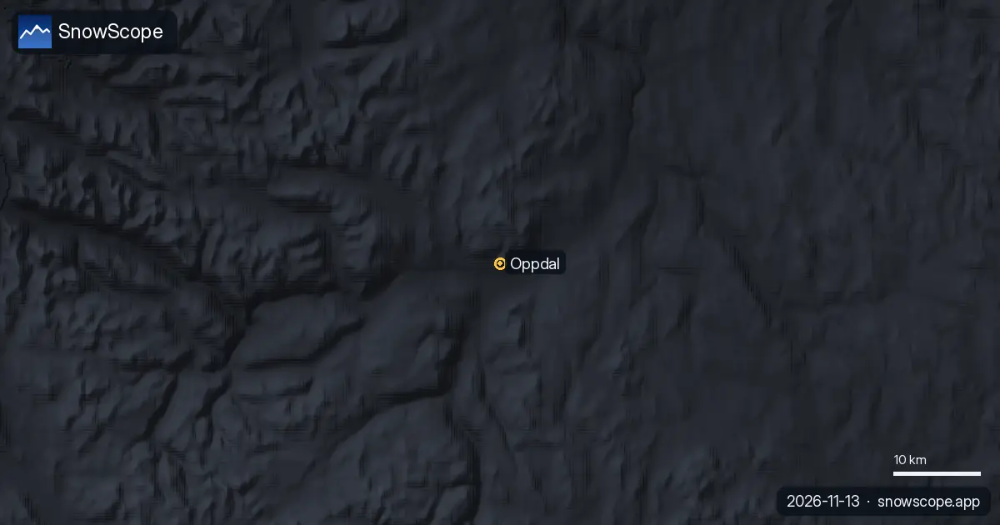

Oppdal فدجنبر: أضمن تلج بكري فالنرويج، وقلال اللي كيعرفوها من برا
واش كاين تلج كافي ف Oppdal فدجنبر؟ فالتاريخ ديالنا ديال 46 شتوة، تقريبا ديما. نهار 15 دجنبر عادي، التحت (585 م) فيه 60 سم، و 93 % ديال الشتوات كان فيهم 30 سم ولا كثر تما فسيمانة 15 حتى 21 دجنبر. هادي أحسن نتيجة لتحت فكل المحطات النرويجية اللي قارنا.
شوف توقعات التلج مباشرة ديال Oppdal فالتطبيق ديال SnowScopeالعلو ديال التلج، التنبيهات والخريطة 3D، فابور.
واش التلج كافي فدجنبر؟ إيه، ومن لتحت
Oppdal فالداخل، بين Dovrefjell و Trondheim، فواد ناشف وبارد كيحفظ التلج ديالو. المحطة فيها 41 كم ديال البيستات و 15 تيليسييج بين 585 م و 1327 م. الخصوصية ديالها فدجنبر: التلج لتحت تقريبا مزيان بحال لفوق، 60 سم، 64 سم و 72 سم لتحت، فالوسط وفالفوق نهار 15 دجنبر عادي.


تلاتة ديال العلوات، تقريبا جواب واحد
النسبة ديال الشتوات اللي فيهم 30 سم ولا كثر فسيمانة 15 حتى 21 دجنبر هي 93 % لتحت، 96 % فالوسط و 98 % فالفوق. فسيمانة نوال: 96 %، 98 % و 98 %. حتى عام ضعيف (واحد من 10) كيبقى فيه 30 سم لتحت و 40 سم فالوسط نهار 15 دجنبر.
التحفظ الصريح هو الاتجاه. المعدل ديال دجنبر لتحت نزل من 71 سم فأول 15 شتوة ل 46 سم فآخر 15. الشتوة اللي فاتت كان 38 سم فالتلاتة ديال العلوات نهار 15 دجنبر: كيتزلج عليه، ولكن تحت النورمال ديال زمان.
الثمن
السكيباس ديال Oppdal كيتباع بأثمنة متبدلة فالحانوت الرسمي أونلاين ديال الشركة. نهار 13 نونبر 2026 ما قدرناش نقراو ثمن ثابت فالصفحة الرسمية، إذن ما كنعطيو حتى رقم. حجز بكري أونلاين وفكر فالتواريخ اللي قبل عطلة نوال.
مقارنة مع Trysil
Trysil أكبر (101 كم ديال البيستات) ومعروفة كثر، ولكن فدجنبر التحت ديالها (407 م) ضعيف بزاف: 26 سم نهار 15 دجنبر عادي و 52 % ديال الشتوات فيهم 30 سم فسيمانة 15 حتى 21 دجنبر. الوسط (44 سم، 83 %) والفوق (60 سم، 89 %) مزيانين، ولكن مازال تحت Oppdal.
إلا بغيتي التلج فكل بلاصة فدجنبر، حتى فالبيستات ديال المبتدئين لتحت، Oppdal هي الأضمن.
كيفاش تنظم السفر
Oppdal فالخط ديال التران والطريق Oslo-Trondheim، كتوصل ليها بلا طريق جبلية طويلة. فهاد الشمال النهار فدجنبر قصير: حسب ساعات قل فالبيست، بدا بكري وفكر فالبرد، حيت الوديان الناشفين غالبا هوما الأبرد.
نصايح للي كيتزلجو
- العائلات مع المبتدئين: التحت ف Oppdal كان فيه 30 سم فنص دجنبر ف 93 % من الشتوات، يعني البيستات الساهلين غالبا معمرين.
- شري السكيباس أونلاين وبكري؛ الأثمنة كتبدل مع التاريخ.
- لبس للبرد القاسح والنهار القصير، وطلع فأول تيليسييج.
- خارج البيست ف Dovrefjell: قرا أولا التنبيه النرويجي ديال الانهيارات (varsom.no).
خرائط أخرى (مواقع خارجية)
المراجع والمصادر
- Oppdal: official lift-pass page of the operator (prices by date; no fixed price quoted), checked 13 November 2026 www.alpinco.com/en/oppdal/buy-day-pass-1-8-days
- Trysil: official lift-pass page of the operator (prices by date; no fixed price quoted), checked 13 November 2026 www.skistar.com/en/winter/skipass/buy-skipass/lift-pass-trysil/
على هاد الأرقام
الأرقام ديال التلج: التاريخ ديال التلج ديال SnowScope، 46 شتوة اللي فاتت (1980-81 حتى ل 2025-26) فالعلوات ديال المحطة، مصحح بالعلو (تقدير لمنطقة، ماشي البلاغات ديال المحطة)؛ «تلج مزيان» = 30 سم ولا كثر فالأرض فالمعدل ديال السيمانة. الخريطة: العلو العادي ديال التلج نهار 15 دجنبر موزع على التضاريس حسب العلو. البيستات والتيليسييجات: OpenSkiMap. الأثمنة ديال السكيباس: اللوائح الرسمية ديال المحطات، متشافة نهار 13 نونبر 2026؛ الأثمنة تقدر تتبدل.
النشرات الرسمية ديال الانهيارات: Varsom (NVE)
كيفاش تستاشهد بهاد المقال
للبحث، التعليم ولا الصحافة: الأرقام والرسومات تقدر تعاود تخدم بيهم بحرية تحت CC BY 4.0 مع هاد الاستشهاد.
SnowScope (2026), Oppdal فدجنبر: أضمن تلج بكري فالنرويج، وقلال اللي كيعرفوها من برا, https://snowscope.app/blog/ar/2026/11/oppdal-december-skiing-snow-reliable-norway.html, تشاف ف 2026-11-14
SnowScope (Atlas Labs). (2026, November 14). Oppdal فدجنبر: أضمن تلج بكري فالنرويج، وقلال اللي كيعرفوها من برا. SnowScope snow reports. https://snowscope.app/blog/ar/2026/11/oppdal-december-skiing-snow-reliable-norway.html
BibTeX
@misc{snowscope2026oppdaldecemberskiingsnow,
author = {{SnowScope (Atlas Labs)}},
title = {Oppdal فدجنبر: أضمن تلج بكري فالنرويج، وقلال اللي كيعرفوها من برا},
year = {2026},
month = nov,
howpublished = {\url{https://snowscope.app/blog/ar/2026/11/oppdal-december-skiing-snow-reliable-norway.html}},
note = {Published 2026-11-14 13:44 UTC; accessed 2026-11-14}
}· CC BY 4.0 · الطريقة، الداتا والأدوات →
Oppdal: التلج والحرارة حسب العلو، هاد الشتا مقارنة مع اللي فاتت (الأدوات) →
تابع Oppdal
فابور: ميساج ملي يجي التلج، والتوقعات كل صباح.
تقارير أخرى ديال التلج

واش المبتدئ اللي كيخاف يقدر يتيق فـ Courmayeur ف شهر دجنبر، فاش العلو ديال التلج ف الوسط كيوصل ف المعدل لـ 60 سم ف الشتوات اللي فاتو؟

Cauterets كتوفر 25 كم ديال البيست بـ 46 EUR، ولكن التاريخ ديال التلج عندنا كيبين بلي أحسن فرصة باش تلقى التلج هي السيمانة اللخرة ديال ديسمبر.

Boí Taüll كيبدا من 2039 م وكيغلب Baqueira Beret فالتمن ديال البيست، واخا التلج ديال بدايات دجنبر كيطلب شوية ديال الصبر.